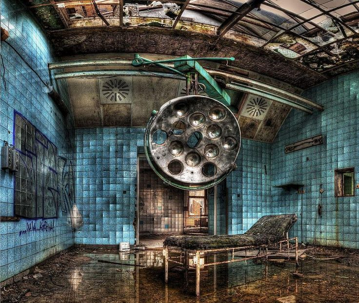
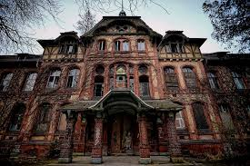

1. El eco de los pacientes
Visitantes afirman escuchar toses, lamentos y pasos en los pabellones. Se dice que son ecos de pacientes de tuberculosis y soldados que murieron allí.
El complejo hospitalario de Beelitz-Heilstätten fue construido entre 1898 y 1930 como un sanatorio para pacientes con tuberculosis. Diseñado como una ciudad médica autosuficiente en medio del bosque, contaba con invernaderos, panadería, central eléctrica y más.
Durante la Primera Guerra Mundial fue convertido en hospital militar, y uno de sus pacientes fue Adolf Hitler, herido en la Batalla del Somme en 1916. En la Segunda Guerra Mundial volvió a servir como hospital militar. Luego, desde 1945 hasta 1994, fue utilizado por el ejército soviético, siendo el mayor hospital militar soviético fuera de la URSS.
Tras la caída del Muro de Berlín, funcionó brevemente como hospital para altos mandos del régimen, como Erich Honecker. Fue finalmente abandonado en 1994.
Visitantes afirman escuchar toses, lamentos y pasos en los pabellones. Se dice que son ecos de pacientes de tuberculosis y soldados que murieron allí.
Uno de los lugares más temidos. Se dice que aún se escuchan instrumentos caer solos y se ven sombras moverse entre las luces rotas.
Una figura encapuchada aparece en un pasillo lleno de grafitis rojos. Lo han visto varios exploradores, pero nadie ha podido fotografiarlo claramente.
Un pabellón donde fallaban radios y linternas. Soldados soviéticos temían ese lugar, y hoy algunos exploradores dicen que la tecnología aún falla allí.
Se han reportado enfermeras flotando por los pasillos y un médico sin rostro caminando entre habitaciones vacías.


